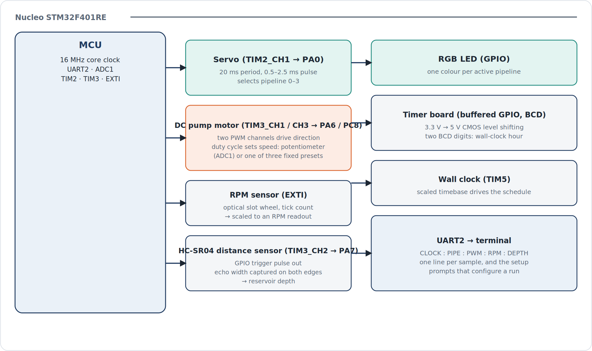

Problem
The assignment was to control a small simulated process, in the shape of a water system: a pump moves "water" out through one of several lines, sensors report back what's happening, and the controller decides what to do next. Underneath that story, it's really an exercise in getting a microcontroller to run several time-sensitive peripherals at once without any of them stepping on each other: PWM outputs, a timer input capture, an external interrupt, an ADC, and a UART link, all sharing one 16 MHz core clock.
System architecture
Everything runs from one Nucleo-F401RE. Two timers do the time-critical work: TIM2 drives the servo, and TIM3 does triple duty, driving the pump motor's two PWM channels and capturing the echo pulse from the distance sensor. An external interrupt counts RPM ticks, ADC1 reads a potentiometer for manual speed control, and a fifth timer (TIM5) keeps a scaled wall clock that schedules the run. Status goes out over UART as one line per sample.

| Peripheral | MCU resource | Role |
|---|---|---|
| Servo | TIM2_CH1 → PA0 | 20 ms period, pulse width selects one of four pipeline positions |
| DC pump motor | TIM3_CH1 / CH3 → PA6 / PC8 | Two PWM channels set direction; duty cycle sets speed from either the potentiometer or a fixed preset |
| RPM sensor | EXTI | Counts ticks from an optical slot wheel, scaled to an RPM reading |
| HC-SR04 distance sensor | GPIO trigger, TIM3_CH2 → PA7 | Trigger pulse out; echo pulse width captured on both edges gives reservoir depth |
| RGB LED | GPIO | Colour indicates the active pipeline |
| Timer / display board | Buffered GPIO (BCD) | 3.3 V → 5 V level-shifted digits show the wall-clock hour |
| Wall clock | TIM5 | Scaled timebase drives the run schedule |
| Status link | UART2 | Setup prompts, then one status line per sample: clock, pipeline, PWM setting, RPM, depth |
Build approach
Each peripheral got its own small STM32CubeIDE project before anything was combined: a GPIO blink test, a timer-driven blink, PWM for the servo, PWM plus RPM feedback for the motor, input capture for the distance sensor, EXTI for the RPM sensor, GPIO for the BCD display and RGB LED, and a scaled timer for the wall clock. Getting each one right in isolation, with its own pin map and its own quick check on a scope, made the final integration mostly a matter of merging code that already worked rather than debugging everything at once.
The servo and the distance sensor both needed external signal buffering, since the Nucleo's 3.3 V logic isn't enough to drive a 5 V servo or a 5 V-powered BCD display directly. Both got a buffer stage on a breadboard, powered from a separate 5 V supply and referenced back to a common ground with the MCU.
Debugging the servo
The servo wasn't responding correctly to the PWM signal it was supposed to be tracking. I went through it step by step: checked power and grounding first, then probed the signal line with an oscilloscope, then compared what I saw against the waveform the firmware should have been generating.
That comparison is what caught it. The pin I'd assumed was tied to the timer's output wasn't actually the one driving the servo signal, so the code was updating a channel that had no path to the hardware. Re-reading the pin mapping in the datasheet more carefully turned up the mismatch. Once the timer channel and the physical pin agreed with each other, the servo tracked the commanded pulse width immediately.

The broader lesson was that firmware and hardware have to be debugged together. The code can look correct and still be wrong, because a register update only matters if it reaches the pin you think it does — and that's something you confirm by measuring, not by reading the code again.
Results
- All eight peripherals above run together from one control loop: the servo, the motor with its two speed sources, RPM sensing, distance sensing, the RGB indicator, the buffered BCD display, the wall clock, and the UART status link.
- Signal timing, integrity and the 3.3 V ↔ 5 V level translation were checked directly with an oscilloscope and a multimeter rather than assumed from the code.
- The system reports one line per sample over UART — clock time, active pipeline, PWM setting, RPM, and depth — alongside the setup prompts that configure a run.